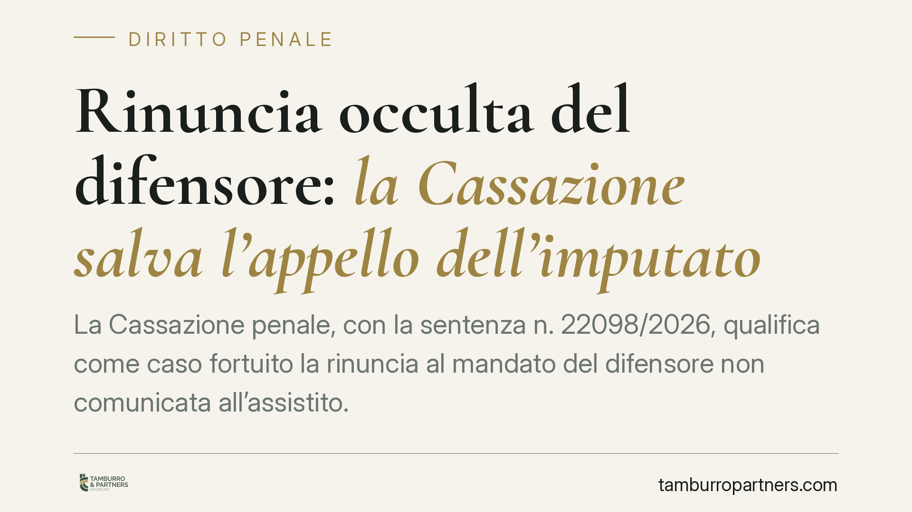

Rinuncia occulta del difensore: la Cassazione salva l'appello dell'imputato
La Cassazione penale, con la sentenza n. 22098/2026, qualifica come caso fortuito la rinuncia al mandato del difensore non comunicata all'assistito. L'imputato condannato in assenza, rimasto all'oscuro dell'abbandono, può così essere rimesso nei termini per proporre appello. Una pronuncia che incide sul delicato equilibrio tra onere di diligenza della parte e diritto di difesa.

Il caso
Un imputato viene condannato in primo grado al termine di un processo celebrato in sua assenza. Il difensore di fiducia aveva nel frattempo rinunciato al mandato, ma senza darne comunicazione al cliente. Risultato: l'assistito non apprende né della rinuncia né della sentenza in tempo utile per impugnarla. Decaduto dal termine, chiede la restituzione nel termine per proporre appello.
La Corte di Cassazione, Sezione VI penale, accoglie la prospettazione difensiva e riconosce la rimessione in termini.
Inquadramento normativo
La decisione ruota attorno all'art. 175 del codice di procedura penale, che disciplina la restituzione nel termine: l'istituto consente alla parte decaduta da una facoltà processuale di riacquistarla quando provi di non aver potuto osservare il termine per caso fortuito o forza maggiore.
Il caso fortuito è l'evento imprevedibile e inevitabile, estraneo alla sfera di controllo del soggetto. La Cassazione colloca in questa categoria la condotta del difensore che rinuncia al proprio incarico senza informarne l'assistito. L'imputato, infatti, non ha alcuno strumento ordinario per conoscere una rinuncia tenuta riservata: non può esigersi da lui una vigilanza che sfocia nel controllo costante dell'operato tecnico del proprio legale.
Il tema si intreccia con l'art. 581, comma 1-quater, c.p.p., introdotto dalla riforma Cartabia, che in caso di sentenza pronunciata in assenza impone requisiti rafforzati per l'atto di impugnazione, tra cui il deposito di specifico mandato rilasciato dopo la sentenza. Proprio queste cautele rendono ancora più gravosa, per l'imputato ignaro, la perdita del contatto con il difensore.
Perché la pronuncia conta
Il principio chiarisce dove si collochi il confine tra la responsabilità della parte e quella del professionista. La regola generale è nota: le negligenze del difensore ricadono ordinariamente sull'assistito, perché il legale agisce in nome e per conto suo. La Cassazione introduce però una deroga precisa.
Quando l'inadempimento del difensore si traduce in un comportamento occulto — la rinuncia non comunicata — viene meno il presupposto stesso dell'imputabilità alla parte. L'imputato non è stato negligente: è stato tenuto all'oscuro. In questa situazione la mancata impugnazione non dipende da una sua scelta o inerzia, ma da un fattore esterno e inconoscibile.
Implicazioni pratiche
Per l'imputato condannato in assenza, la sentenza apre una via di recupero concreta. Chi scopre tardivamente di essere stato abbandonato dal proprio difensore, e per questo ha perso il termine per impugnare, dispone di un argomento solido per chiedere la restituzione nel termine ai sensi dell'art. 175 c.p.p.
Non si tratta di un recupero automatico. L'interessato deve dimostrare due elementi: di non aver ricevuto comunicazione della rinuncia e di aver attivato l'istanza con tempestività dal momento in cui ha avuto conoscenza effettiva del provvedimento. La diligenza, cioè, resta richiesta: solo che va valutata dal momento in cui l'imputato è stato messo in condizione di sapere.
Per i difensori la pronuncia è un richiamo netto. La rinuncia al mandato non è un atto che esaurisce i suoi effetti nel rapporto con l'autorità giudiziaria: comporta un dovere di informazione verso l'assistito. Ometterlo espone a conseguenze sul piano deontologico e civilistico.
Cosa fare in concreto
- Verifica immediata del fascicolo: appena emerge il dubbio di una rinuncia, richiedi copia degli atti alla cancelleria per accertare data della sentenza e posizione del difensore.
- Documenta la mancata comunicazione: conserva ogni elemento che provi di non aver ricevuto notizia della rinuncia (assenza di PEC, raccomandate, comunicazioni dallo studio).
- Agisci tempestivamente: l'istanza di restituzione nel termine va proposta senza indugio dal momento in cui apprendi della condanna; il ritardo compromette l'accoglimento.
- Rivolgiti subito a un nuovo difensore: per impugnare una sentenza pronunciata in assenza servono gli specifici requisiti dell'art. 581, comma 1-quater, c.p.p., incluso il mandato rilasciato dopo la decisione.
- Valuta i profili di responsabilità: la condotta omissiva del precedente legale può rilevare anche sotto il profilo risarcitorio.
Conclusione
La sentenza n. 22098/2026 non abolisce il principio per cui le scelte difensive vincolano l'assistito. Ne traccia però il limite: quando l'inadempimento del difensore è nascosto, non può pesare su chi lo ha subito senza possibilità di avvedersene. Un bilanciamento che valorizza il diritto di difesa senza aprire scorciatoie, perché l'onere probatorio resta interamente a carico di chi invoca la rimessione.
---
*Contributo informativo a cura di Tamburro & Partners - Avv. Giuseppe Tamburro. Non costituisce parere legale.*
Ogni condominio ha una storia a sé.
Se gestisci un'amministrazione e vuoi un confronto su una specifica questione condominiale, scrivi allo studio. Ti rispondiamo entro un giorno lavorativo.